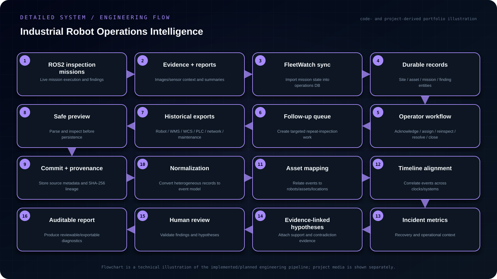

Objective
Unify live robot inspection workflows with historical multi-system incident diagnostics into an auditable operations-intelligence platform that preserves evidence provenance, aligns events across systems, supports operator finding lifecycle and keeps hypotheses subject to human review.
- Synchronize live inspection missions, reports and evidence into durable site/asset/mission/finding records.
- Support operator acknowledgement, assignment, reinspect, resolve and close actions with traceable state transitions.
- Safely ingest heterogeneous historical robot/WMS/WCS/PLC/network/maintenance data through preview-before-commit.
- Preserve source provenance, normalize events, align timelines and generate evidence-linked hypotheses that remain human-reviewed rather than autonomous control actions.
My contribution
- Integrated the autonomous inspection stack with a FleetWatch operator workflow and a separate historical incident-intelligence service.
- FleetWatch imports benchmark reports, campaign state and evidence into persistent site/asset/mission/finding records.
- The diagnostic service ingests CSV, JSON, JSONL, structured logs, ROS exports and other supported files through preview-before-commit flows, then normalizes events, aligns timelines, maps assets, calculates incident/recovery context, links hypotheses to evidence and generates reviewable reports.
System architecture
Live path: ROS 2 inspection → reports / evidence / campaign state → FleetWatch sync → operator acknowledge / assign / reinspect / resolve / close → follow-up mission queue. Historical path: robot / WMS / WCS / PLC / network / maintenance exports → safe preview + commit → immutable source records → normalization + asset mapping → aligned timeline → incident metrics + evidence-linked hypotheses → human-reviewed reports.

Read the architecture as text
- ROS2 inspection missions — Live mission execution and findings
- Evidence + reports — Images/sensor context and summaries
- FleetWatch sync — Import mission state into operations DB
- Durable records — Site / asset / mission / finding entities
- Operator workflow — Acknowledge / assign / reinspect / resolve / close
- Follow-up queue — Create targeted repeat-inspection work
- Historical exports — Robot / WMS / WCS / PLC / network / maintenance
- Safe preview — Parse and inspect before persistence
- Commit + provenance — Store source metadata and SHA-256 lineage
- Normalization — Convert heterogeneous records to event model
- Asset mapping — Relate events to robots/assets/locations
- Timeline alignment — Correlate events across clocks/systems
- Incident metrics — Recovery and operational context
- Evidence-linked hypotheses — Attach support and contradiction evidence
- Human review — Validate findings and hypotheses
- Auditable report — Produce reviewable/exportable diagnostics
Implementation
Integrated the autonomous inspection stack with a FleetWatch operator workflow and a separate historical incident-intelligence service. FleetWatch imports benchmark reports, campaign state and evidence into persistent site/asset/mission/finding records. The diagnostic service ingests CSV, JSON, JSONL, structured logs, ROS exports and other supported files through preview-before-commit flows, then normalizes events, aligns timelines, maps assets, calculates incident/recovery context, links hypotheses to evidence and generates reviewable reports.
Engineering decisions
The diagnostic subsystem is intentionally read-only with respect to robots and industrial control systems. Source files retain SHA-256 provenance, ingestion uses a preview-before-commit boundary, hypotheses can carry supporting or contradicting evidence, and human review remains explicit instead of allowing the system to present unverified root-cause claims as facts.
Challenges & debugging
A robot anomaly rarely lives in one log. Navigation and inspection evidence may need to be reconciled with fleet, WMS/WCS, PLC, network, charger, ticket and maintenance records before an operator can understand impact, recovery and likely causes.
Validation
The repository contains CI workflows plus contract, integration, end-to-end, browser, migration, fault-injection, parser-fuzz, property, performance, PostgreSQL, release and security tests. It also includes backup/restore tooling, migration history and release-gate checks. These are treated as validation surfaces in the portfolio, not as unsupported claims that every environment will pass unchanged.
Outcome & boundaries
Integrated live inspection findings and historical diagnostics with evidence provenance and explicit human review. Test tooling is documented; universal environment compatibility is not claimed.
Project sources
Implementation notes and available project sources. Public code is linked where available; descriptive diagrams are not independent validation.


{kind=link}